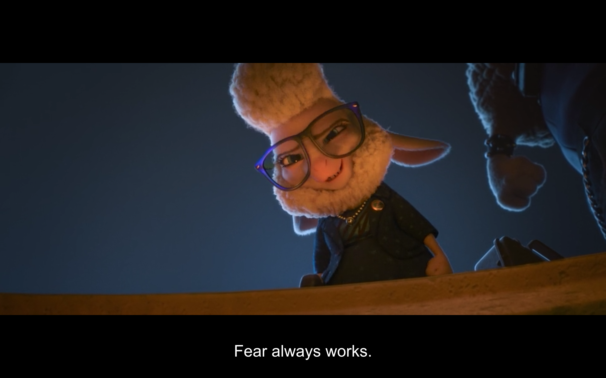

Welcome to my page
Who am I
My name is Yuchao Jiang. I love reading, thinking, and writing. I also love doing sports which keep me empowered. In 2015, I finished 2 full marathons, with my personal best record of 4.5 hours. Here is my athlinks.
My childhood dream is to become a scientist because science can explain many marverlous natural phenomena with simple physical laws. I earned my B.S degree in Applied Physics, and recently received my Ph.D. degree in Electrical and Computer Engineering. Basically, my research area is semiconductor lasers. Here is my google scholar.
Upon my graduation, I realized I was too focus on my doctoral study and wasn't aware of the rapid technology advancement, especially in the computing area. The human knowleadge is in an explosive growth. With big data, artificial intelligence and many scientific breakthroughs such as super-resolution microscopy (acknowledged by 2014 Nobel prize in Chemistry), the human civilization is actually accelerating! So I need a change.
What am I doing

Kind of waking up from one night, I realized I lose everything: family, assistantship, money and future. In retrospect, I had spent all my life trying to be a good student that is well-defined by the teachers. I never try anything new enough to find my true passion, let alone fearless fight for it.The truth is: if you don't try anything new, you already fail.
Say, I have been considering to learn computer science since the first year of my doctoral odyssey. But I only took a data structure class in the second year and then completely gave up. The excuse is that I didn't have enough resources to concentrate on that study. But I know I wouldn't make it a priority until I don't really want to accomplish it.
So, after graduation, I am completely free and can't wait to learn more about computer programming. I have been sharing my learning notes in blogger since 2016 June, This writing is a lot of fun and helps me reflect and organize my thought. I learned to use Markdown which makes writing a more pure thing. A few days ago, I learned Git and GitHub in Udacity. Now I already create my Github Page. I feel awesome!
Alought I still don't know what exactly I am going to do, this is a good beginning...
What am I thinking

A lot frustrations in reality lead me to think really hard of the true meaning of life. Any piece of thought-provoking material is a life-saver to me.
One of my favourite writer is XiaoLai, whose selfless sharing of his ideas totally blow out my mind. In his free online course "persuade yourself by reasoning", he pointed out that fear and benefit are two ultimate motivations for human being. People don't upfront the challenge because they fear the uncerntainty of the future. They rather wait, pray and close their eyes.
So, to beat my own fear that root deeply in my mind, the first step is to be aware of that fear. The second step is to be confident in every aspects: moral, knowledge, physical, etc.
Keep exploring and write them down.